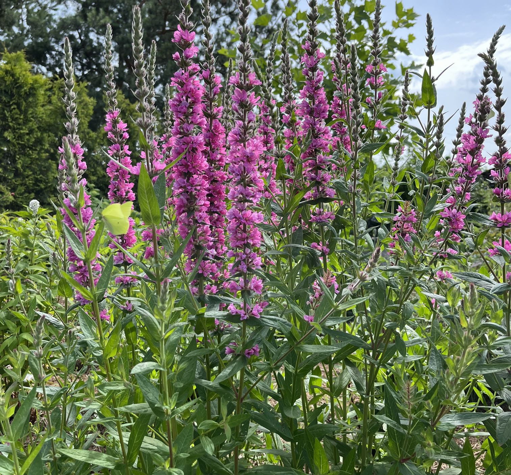

Byliny możemy pogrupować na ozdobne z liści i z kwiatów, a także na te, które rosną w pełnym słońcu, na glebach jałowych, półcieniu lub zupełnie cieniolubne i rosnące w terenie podmokłym. Są roślinami tworzącymi najniższą warstwę naszych ogrodów. Wieloletnie kompozycje oszczędzają nasz czas i zachwycają różnorodnością form i kształtów. Bogaty wybór bylin zadowoli zarówno wielbicieli najprostszych upraw jak i koneserów poszukujących bardziej unikalnych odmian. Niepodważalnym atutem tych roślin jest długi okres kwitnienia. Umiejętnie dobrany zestaw roślin może cieszyć nasze oko od wczesnej wiosny do późnej jesieni. Z roku na rok wprowadzamy do naszej produkcji coraz większy asortyment bylin.
Oferujemy Państwu:
Lawenda wąskolistna
Lawenda Perovskia
Funkia
Jeżówka
Ciemiernik
Trytoma groniasta
Kocimiętka
Gipsówka
Malwa
Szałwia omszona
Szałwia bagienna
Przetacznik kłosowy
Serduszka okazała
Brunera
Dzielżan
Aster
Margerytka
Tawułka Arendsa
Penstemon palczasty
Dąbrówka rozłogowa
Rozchodnik okazały
Ubiorek wiecznie zielony
Floks szydlasty
Floks wiechowaty
Bergenia sercowata
Rudbekia
Chaber górski
Języcznik zwyczajny
Wietlica samicza
Pióropusznik
Kopytnik
Żurawka
Krwawnica
Krwiściąg
Acena
Krwawnik pospolity
Krwawnik kichawiec
Pluskwica prosta
Przywrotnik miękki
Czosnek ozdobny
Zawilec mieszańcowy
Dzwonek karpacki
Dzwonek skupiony
Ostróżka
Goździk siny
Naparstnica purpurowa
Omieg wschodni
Przegorzan pospolity
Epimedium
Mikołajek płaskolistny
Gaura
Bodziszek
Kuklik
Liliowiec
Kosaciec syberyjski
Liatra kłosowa
Języczka pomarańczowa
Języczka Przewalskiego
Tojeść orzęsiona
Tojeść rozesłana
Tojeść kropkowana
Pysznogłówka
Wiesiołek missouryjski
Piwonia
Rdest himalajski
Rozwar wielkokwiatowy
Kokoryczka wielokwiatowa
Pierwiosnek ząbkowany
Sasanka zwyczajna
Rodgresja kasztanowcolistna
Rozchodnik kamczacki
Czyściec wełnisty
Rutewka
Pełnik chiński
Pełnik europejski
Werbena patagońska
Werbena bampton
Juka karolińska
Rojnik
